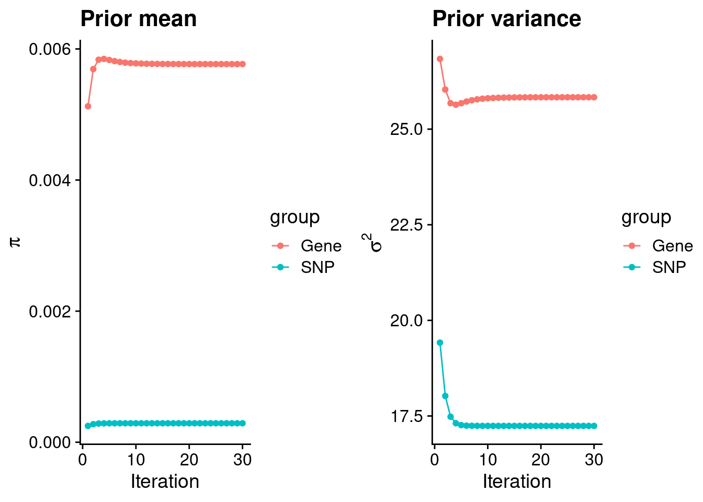
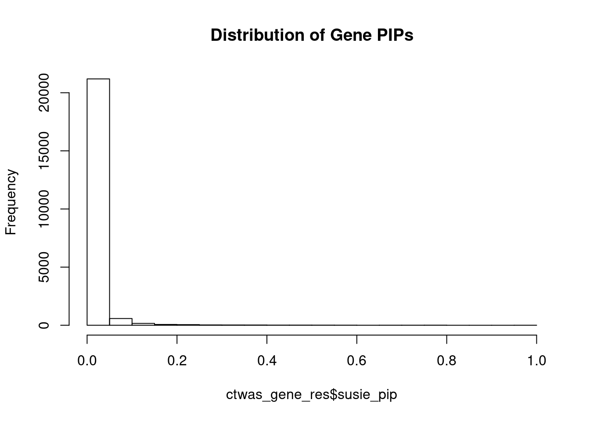
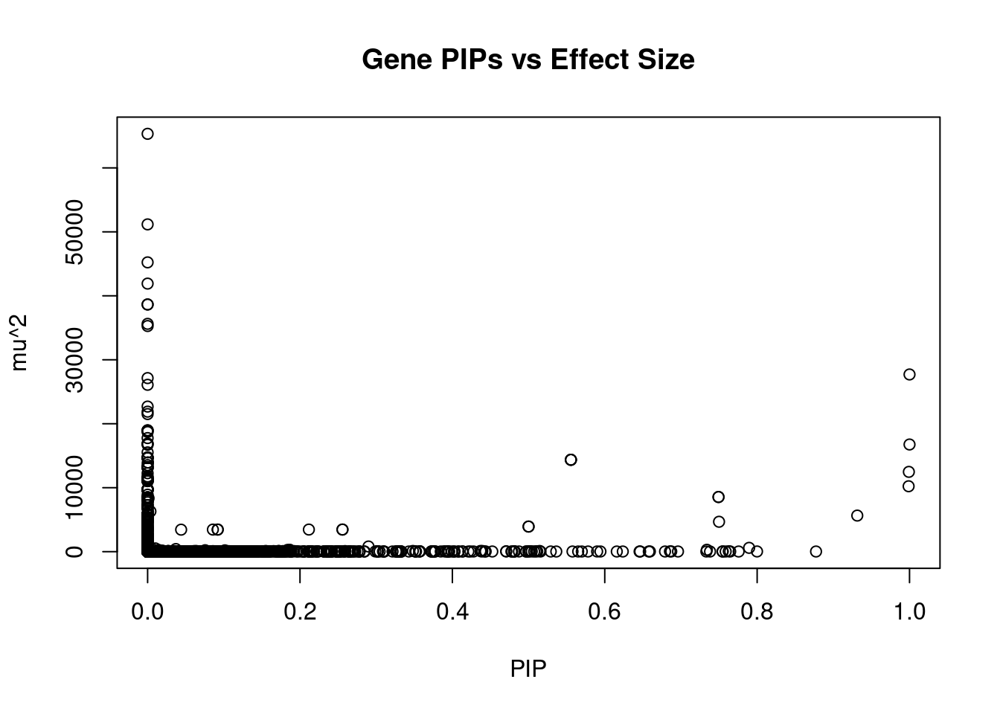
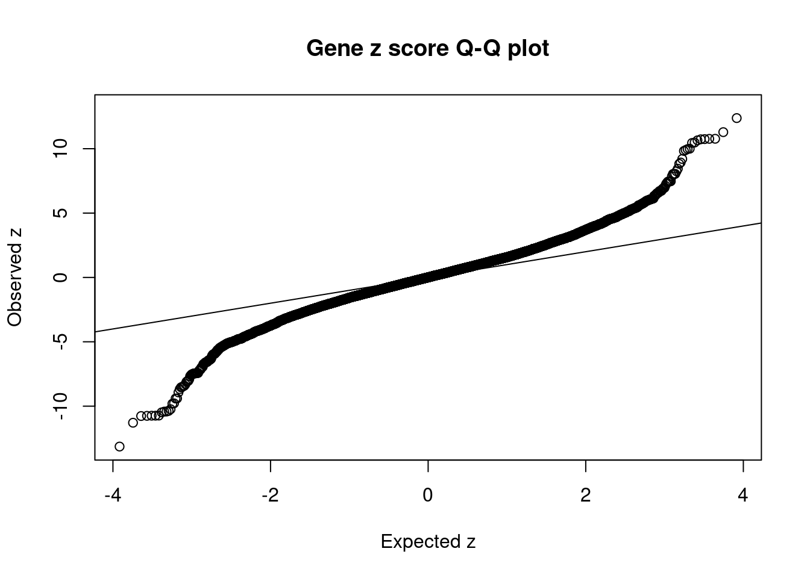
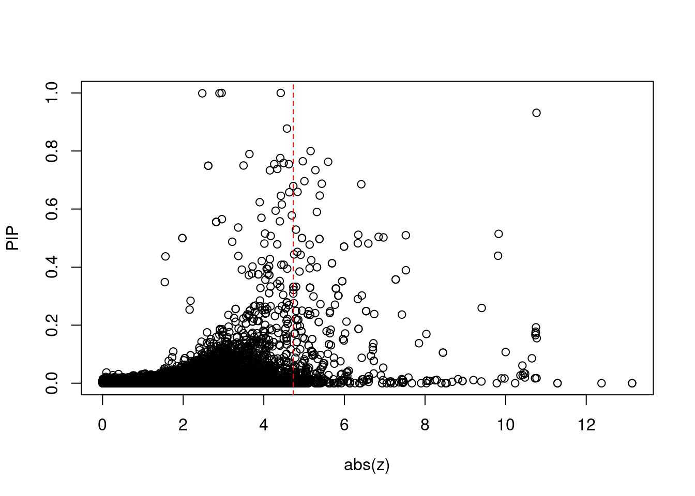
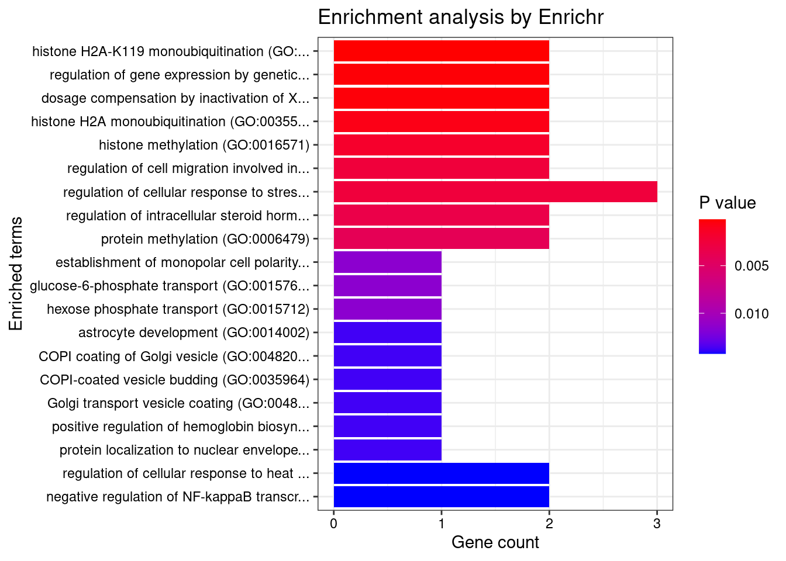
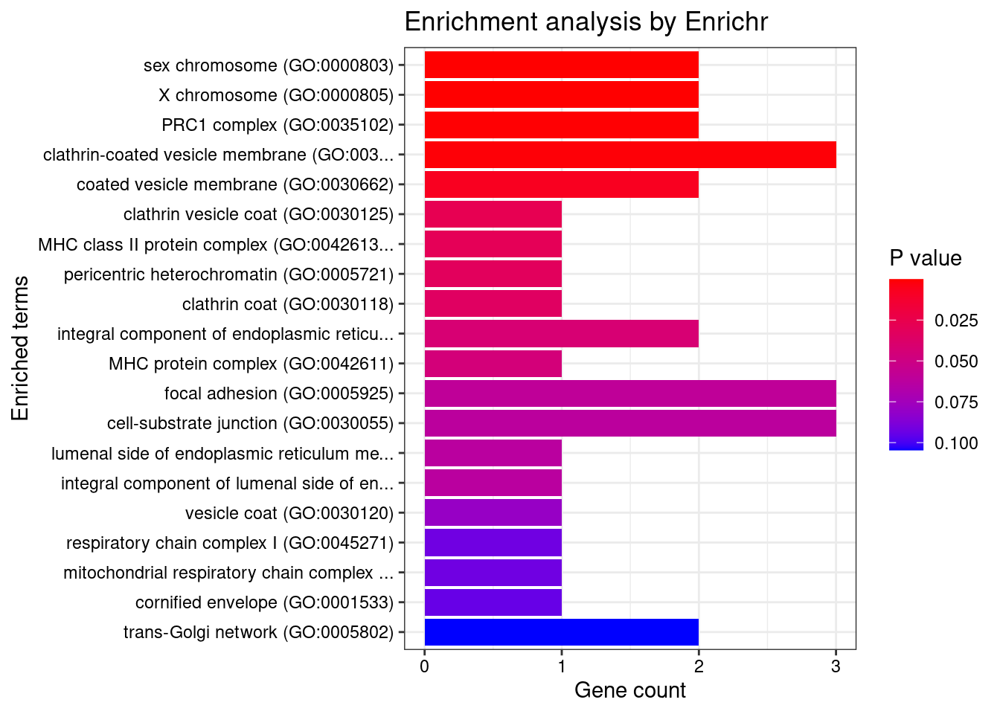
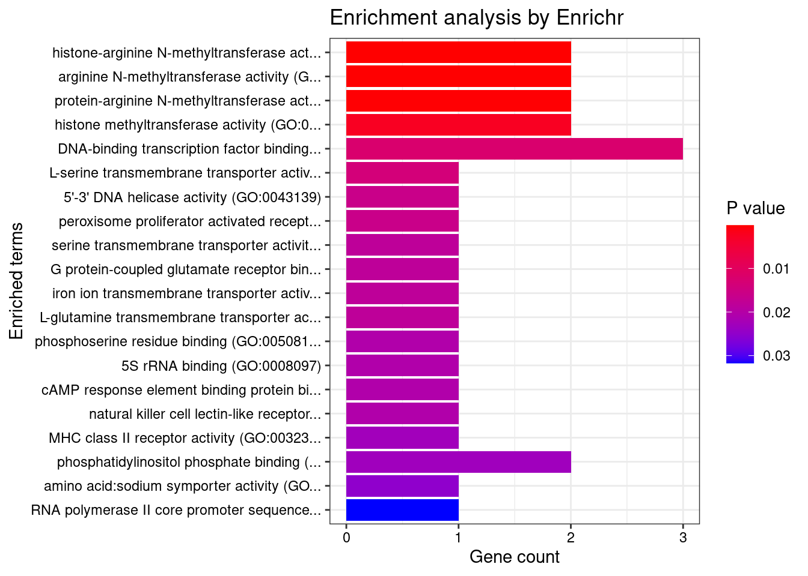
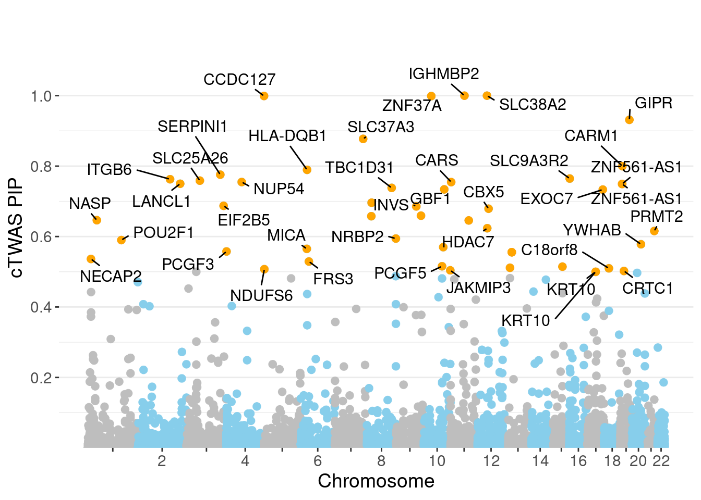
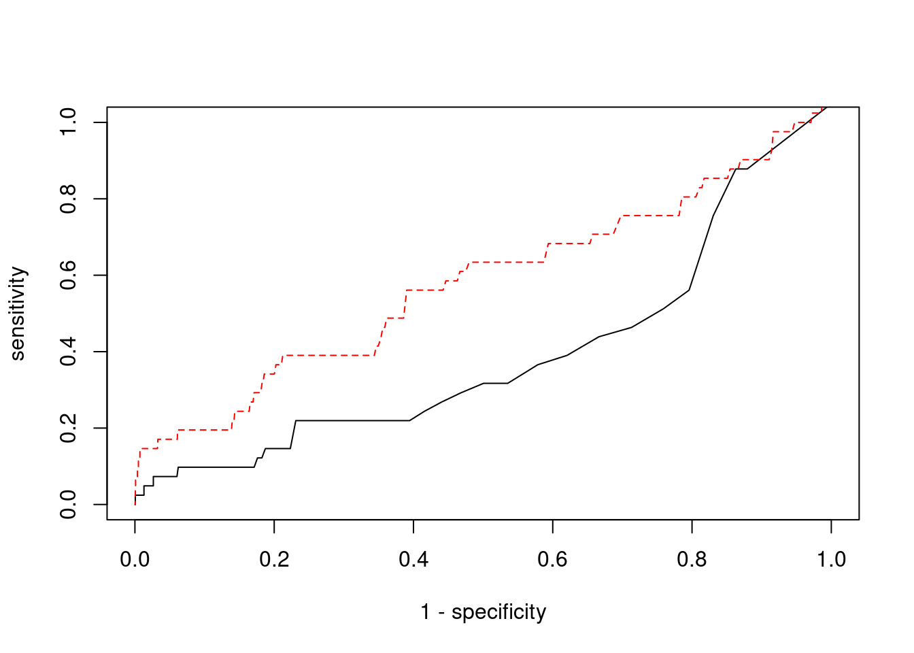

Last updated: 2022-02-22
Checks: 6 1
Knit directory: cTWAS_analysis/
This reproducible R Markdown analysis was created with workflowr (version 1.6.2). The Checks tab describes the reproducibility checks that were applied when the results were created. The Past versions tab lists the development history.
Great! Since the R Markdown file has been committed to the Git repository, you know the exact version of the code that produced these results.
Great job! The global environment was empty. Objects defined in the global environment can affect the analysis in your R Markdown file in unknown ways. For reproduciblity it’s best to always run the code in an empty environment.
The command set.seed(20211220) was run prior to running the code in the R Markdown file. Setting a seed ensures that any results that rely on randomness, e.g. subsampling or permutations, are reproducible.
Great job! Recording the operating system, R version, and package versions is critical for reproducibility.
Nice! There were no cached chunks for this analysis, so you can be confident that you successfully produced the results during this run.
Using absolute paths to the files within your workflowr project makes it difficult for you and others to run your code on a different machine. Change the absolute path(s) below to the suggested relative path(s) to make your code more reproducible.
| absolute | relative |
|---|---|
| /project2/xinhe/shengqian/cTWAS/cTWAS_analysis/data/ | data |
| /project2/xinhe/shengqian/cTWAS/cTWAS_analysis/code/ctwas_config.R | code/ctwas_config.R |
Great! You are using Git for version control. Tracking code development and connecting the code version to the results is critical for reproducibility.
The results in this page were generated with repository version 1058990. See the Past versions tab to see a history of the changes made to the R Markdown and HTML files.
Note that you need to be careful to ensure that all relevant files for the analysis have been committed to Git prior to generating the results (you can use wflow_publish or wflow_git_commit). workflowr only checks the R Markdown file, but you know if there are other scripts or data files that it depends on. Below is the status of the Git repository when the results were generated:
Ignored files:
Ignored: .ipynb_checkpoints/
Untracked files:
Untracked: Rplot.png
Untracked: analysis/.ipynb_checkpoints/
Untracked: analysis/Glucose_Adipose_Subcutaneous.Rmd
Untracked: analysis/Glucose_Adipose_Visceral_Omentum.Rmd
Untracked: analysis/Splicing_Test.Rmd
Untracked: code/.ipynb_checkpoints/
Untracked: code/AF_out/
Untracked: code/BMI_S_out/
Untracked: code/BMI_out/
Untracked: code/Glucose_out/
Untracked: code/LDL_S_out/
Untracked: code/T2D_out/
Untracked: code/ctwas_config.R
Untracked: code/mapping.R
Untracked: code/out/
Untracked: code/run_AF_analysis.sbatch
Untracked: code/run_AF_analysis.sh
Untracked: code/run_AF_ctwas_rss_LDR.R
Untracked: code/run_BMI_analysis.sbatch
Untracked: code/run_BMI_analysis.sh
Untracked: code/run_BMI_analysis_S.sbatch
Untracked: code/run_BMI_analysis_S.sh
Untracked: code/run_BMI_ctwas_rss_LDR.R
Untracked: code/run_BMI_ctwas_rss_LDR_S.R
Untracked: code/run_Glucose_analysis.sbatch
Untracked: code/run_Glucose_analysis.sh
Untracked: code/run_Glucose_ctwas_rss_LDR.R
Untracked: code/run_LDL_analysis_S.sbatch
Untracked: code/run_LDL_analysis_S.sh
Untracked: code/run_LDL_ctwas_rss_LDR_S.R
Untracked: code/run_T2D_analysis.sbatch
Untracked: code/run_T2D_analysis.sh
Untracked: code/run_T2D_ctwas_rss_LDR.R
Untracked: data/.ipynb_checkpoints/
Untracked: data/AF/
Untracked: data/BMI/
Untracked: data/BMI_S/
Untracked: data/Glucose/
Untracked: data/LDL_S/
Untracked: data/T2D/
Untracked: data/TEST/
Untracked: data/UKBB/
Untracked: data/UKBB_SNPs_Info.text
Untracked: data/gene_OMIM.txt
Untracked: data/gene_pip_0.8.txt
Untracked: data/mashr_Heart_Atrial_Appendage.db
Untracked: data/mashr_sqtl/
Untracked: data/summary_known_genes_annotations.xlsx
Untracked: data/untitled.txt
Unstaged changes:
Modified: analysis/BMI_Brain_Cortex.Rmd
Modified: analysis/LDL_Liver_S.Rmd
Modified: analysis/index.Rmd
Note that any generated files, e.g. HTML, png, CSS, etc., are not included in this status report because it is ok for generated content to have uncommitted changes.
These are the previous versions of the repository in which changes were made to the R Markdown (analysis/BMI_Brain_Spinal_cord_cervical_c-1_S.Rmd) and HTML (docs/BMI_Brain_Spinal_cord_cervical_c-1_S.html) files. If you’ve configured a remote Git repository (see ?wflow_git_remote), click on the hyperlinks in the table below to view the files as they were in that past version.
| File | Version | Author | Date | Message |
|---|---|---|---|---|
| Rmd | 1058990 | sq-96 | 2022-02-22 | update |
#number of imputed weights
nrow(qclist_all)[1] 22198#number of imputed weights by chromosome
table(qclist_all$chr)
1 2 3 4 5 6 7 8 9 10 11 12 13 14 15 16
2051 1538 1269 920 873 1191 1238 775 894 1019 1359 1094 456 760 792 963
17 18 19 20 21 22
1518 325 1538 689 312 624 #number of imputed weights without missing variants
sum(qclist_all$nmiss==0)[1] 20471#proportion of imputed weights without missing variants
mean(qclist_all$nmiss==0)[1] 0.9222#add z scores to results
load(paste0(results_dir, "/", analysis_id, "_expr_z_gene.Rd"))
ctwas_gene_res$z <- z_gene[ctwas_gene_res$intron_id,]$z
z_snp <- z_snp[z_snp$id %in% ctwas_snp_res$id,]
ctwas_snp_res$z <- z_snp$z[match(ctwas_snp_res$id, z_snp$id)]
#merge gene and snp results with added information
ctwas_snp_res$genename=NA
ctwas_snp_res$gene_type=NA
ctwas_snp_res$intron_id=NA
ctwas_res <- rbind(ctwas_gene_res,
ctwas_snp_res[,colnames(ctwas_gene_res)])
#get number of eQTL for geens
num_eqtl <- c()
for (i in 1:22){
load(paste0(results_dir, "/", analysis_id, "_expr_chr", i, ".exprqc.Rd"))
num_eqtl <- c(num_eqtl, unlist(lapply(wgtlist, nrow)))
}
ctwas_gene_res$num_eqtl <- num_eqtl[ctwas_gene_res$intron_id]
#store columns to report
report_cols <- colnames(ctwas_gene_res)[!(colnames(ctwas_gene_res) %in% c("type", "region_tag1", "region_tag2", "cs_index", "gene_type", "z_flag", "id", "chrom", "pos"))]
first_cols <- c("genename", "region_tag")
report_cols <- c(first_cols, report_cols[!(report_cols %in% first_cols)])
report_cols_snps <- c("id", report_cols[-1])
report_cols_snps <- report_cols_snps[!(report_cols_snps %in% "num_eqtl")]
#get number of SNPs from s1 results; adjust for thin argument
ctwas_res_s1 <- data.table::fread(paste0(results_dir, "/", analysis_id, "_ctwas.s1.susieIrss.txt"))
n_snps <- sum(ctwas_res_s1$type=="SNP")/thin
rm(ctwas_res_s1)
#estimated group prior
estimated_group_prior <- group_prior_rec[,ncol(group_prior_rec)]
names(estimated_group_prior) <- c("gene", "snp")
estimated_group_prior["snp"] <- estimated_group_prior["snp"]*thin #adjust parameter to account for thin argument
print(estimated_group_prior) gene snp
0.0057692 0.0002894 #estimated group prior variance
estimated_group_prior_var <- group_prior_var_rec[,ncol(group_prior_var_rec)]
names(estimated_group_prior_var) <- c("gene", "snp")
print(estimated_group_prior_var) gene snp
25.83 17.24 #report sample size
print(sample_size)[1] 336107#report group size
group_size <- c(nrow(ctwas_gene_res), n_snps)
print(group_size)[1] 22198 7535010#estimated group PVE
estimated_group_pve <- estimated_group_prior_var*estimated_group_prior*group_size/sample_size #check PVE calculation
names(estimated_group_pve) <- c("gene", "snp")
print(estimated_group_pve) gene snp
0.009843 0.111851 #compare sum(PIP*mu2/sample_size) with above PVE calculation
c(sum(ctwas_gene_res$PVE),sum(ctwas_snp_res$PVE))[1] 0.3821 16.2553
genename region_tag susie_pip mu2 PVE
21963 IGHMBP2 11_38 1.0000 27703.01 8.242e-02
21975 SLC38A2 12_29 1.0000 16754.50 4.985e-02
21738 CCDC127 5_1 0.9991 12476.13 3.709e-02
21903 ZNF37A 10_28 0.9988 10226.25 3.039e-02
22168 GIPR 19_32 0.9314 5642.01 1.564e-02
21870 SLC37A3 7_86 0.8773 24.65 6.435e-05
18736 CARM1 19_9 0.7999 31.83 7.575e-05
6714 HLA-DQB1 6_26 0.7895 596.93 1.402e-03
4474 SERPINI1 3_103 0.7757 23.98 5.534e-05
15718 SLC9A3R2 16_2 0.7646 28.03 6.376e-05
2844 ITGB6 2_96 0.7628 59.94 1.360e-04
3996 SLC25A26 3_45 0.7587 24.87 5.613e-05
5104 NUP54 4_51 0.7548 30.81 6.918e-05
11456 CARS 11_2 0.7546 25.64 5.757e-05
3114 LANCL1 2_124 0.7500 4675.56 1.043e-02
18766 ZNF561-AS1 19_9 0.7493 8544.87 1.905e-02
18767 ZNF561-AS1 19_9 0.7493 8544.87 1.905e-02
9273 TBC1D31 8_80 0.7382 25.36 5.571e-05
21923 GBF1 10_65 0.7340 295.14 6.445e-04
17767 EXOC7 17_42 0.7334 24.09 5.257e-05
intron_id z num_eqtl
21963 intron_11_68911603_68914823 4.420 1
21975 intron_12_46366945_46367076 2.953 1
21738 intron_5_216859_218093 2.900 1
21903 intron_10_38094490_38095538 2.474 1
22168 intron_19_45677108_45677710 10.766 1
21870 intron_7_140348767_140351273 -4.575 2
18736 intron_19_10919680_10919877 5.161 1
6714 intron_6_32660249_32661347 3.643 1
4474 intron_3_167735823_167789111 -4.409 2
15718 intron_16_2037600_2037859 -4.967 1
2844 intron_2_160258046_160270202 5.596 1
3996 intron_3_66263379_66346364 4.492 1
5104 intron_4_76132719_76134175 4.259 1
11456 intron_11_3039931_3040896 4.623 2
3114 intron_2_210476412_210476620 3.497 1
18766 intron_19_9632417_9633460 2.621 1
18767 intron_19_9632417_9645074 -2.621 1
9273 intron_8_123130333_123134114 -4.335 1
21923 intron_10_102260116_102344051 -5.281 1
17767 intron_17_76101863_76103361 4.151 1
genename region_tag susie_pip mu2 PVE
21948 BDNF-AS 11_19 0 65329 0.00000
18968 MAST3 19_14 0 51168 0.00000
9562 CCDC171 9_13 0 45231 0.00000
9563 CCDC171 9_13 0 41910 0.00000
21558 NADK 1_1 0 38644 0.00000
21559 NADK 1_1 0 38644 0.00000
18970 MAST3 19_14 0 35618 0.00000
18971 MAST3 19_14 0 35278 0.00000
21963 IGHMBP2 11_38 1 27703 0.08242
21961 MRPL21 11_38 0 27137 0.00000
21947 BDNF-AS 11_19 0 26088 0.00000
14997 CATSPER2P1 15_16 0 22684 0.00000
21962 MRPL21 11_38 0 21890 0.00000
21944 BDNF-AS 11_19 0 21513 0.00000
21687 UBXN4 2_80 0 18980 0.00000
3884 HEMK1 3_35 0 18932 0.00000
3883 C3orf18 3_35 0 18927 0.00000
21557 RP1-283E3.8 1_1 0 18711 0.00000
4435 ARHGEF26 3_95 0 17761 0.00000
21567 GNB1 1_1 0 16877 0.00000
intron_id z num_eqtl
21948 intron_11_27676140_27676982 12.379 1
18968 intron_19_18110741_18121685 -7.147 1
9562 intron_9_15888088_15888983 -7.903 1
9563 intron_9_15889101_15920270 -7.233 1
21558 intron_1_1753649_1754051 5.047 1
21559 intron_1_1753649_1754284 -5.047 1
18970 intron_19_18147017_18147443 -5.650 2
18971 intron_19_18147044_18147443 5.609 2
21963 intron_11_68911603_68914823 4.420 1
21961 intron_11_68898012_68900535 4.267 2
21947 intron_11_27659228_27676982 -1.202 1
14997 intron_15_43744219_43744395 -4.508 1
21962 intron_11_68898012_68900548 -4.068 2
21944 intron_11_27640005_27658241 -5.845 1
21687 intron_2_135754277_135755517 -3.871 1
3884 intron_3_50577573_50577826 4.701 1
3883 intron_3_50569574_50570931 4.682 1
21557 intron_1_1732523_1734690 -2.833 2
4435 intron_3_154152932_154187685 -4.115 1
21567 intron_1_1839238_1879787 -5.351 1 genename region_tag susie_pip mu2 PVE
21963 IGHMBP2 11_38 1.00000 27703.0 0.0824232
21975 SLC38A2 12_29 1.00000 16754.5 0.0498487
21738 CCDC127 5_1 0.99913 12476.1 0.0370873
21903 ZNF37A 10_28 0.99882 10226.3 0.0303897
13694 SPG20 13_13 0.55556 14365.0 0.0237441
13695 SPG20 13_13 0.55556 14365.0 0.0237441
13696 SPG20 13_13 0.55556 14365.0 0.0237441
18766 ZNF561-AS1 19_9 0.74929 8544.9 0.0190493
18767 ZNF561-AS1 19_9 0.74929 8544.9 0.0190493
22168 GIPR 19_32 0.93143 5642.0 0.0156352
3114 LANCL1 2_124 0.74998 4675.6 0.0104330
17181 KRT10 17_24 0.50001 3924.3 0.0058379
17182 KRT10 17_24 0.50001 3924.3 0.0058379
1674 TATDN3 1_108 0.25575 3455.9 0.0026296
1673 TATDN3 1_108 0.25575 3455.9 0.0026296
1671 TATDN3 1_108 0.21165 3455.0 0.0021757
6714 HLA-DQB1 6_26 0.78947 596.9 0.0014021
1669 NSL1 1_108 0.09212 3452.8 0.0009463
1668 NSL1 1_108 0.09186 3452.8 0.0009437
1667 NSL1 1_108 0.08566 3452.4 0.0008799
intron_id z num_eqtl
21963 intron_11_68911603_68914823 4.420 1
21975 intron_12_46366945_46367076 2.953 1
21738 intron_5_216859_218093 2.900 1
21903 intron_10_38094490_38095538 2.474 1
13694 intron_13_36335832_36336287 2.819 1
13695 intron_13_36335832_36346240 -2.819 1
13696 intron_13_36335832_36346582 2.819 1
18766 intron_19_9632417_9633460 2.621 1
18767 intron_19_9632417_9645074 -2.621 1
22168 intron_19_45677108_45677710 10.766 1
3114 intron_2_210476412_210476620 3.497 1
17181 intron_17_40818482_40818767 -1.980 1
17182 intron_17_40818482_40818820 1.980 1
1674 intron_1_212807848_212812248 3.301 1
1673 intron_1_212807848_212812227 -3.301 1
1671 intron_1_212804429_212804596 3.299 1
6714 intron_6_32660249_32661347 3.643 1
1669 intron_1_212787637_212791530 3.258 1
1668 intron_1_212782426_212784363 3.258 1
1667 intron_1_212739601_212766189 -3.259 1 genename region_tag susie_pip mu2 PVE
21945 BDNF-AS 11_19 0.000e+00 9768.90 0.000e+00
21946 BDNF-AS 11_19 0.000e+00 9768.90 0.000e+00
21948 BDNF-AS 11_19 0.000e+00 65329.18 0.000e+00
2061 DNAJC27-AS1 2_15 6.231e-05 192.41 3.567e-08
2062 DNAJC27-AS1 2_15 6.231e-05 192.41 3.567e-08
1544 SHISA4 1_102 1.551e-01 112.96 5.211e-05
16056 INO80E 16_24 1.750e-02 95.94 4.994e-06
22168 GIPR 19_32 9.314e-01 5642.01 1.564e-02
16033 SH2B1 16_23 1.924e-01 90.98 5.209e-05
16030 ATXN2L 16_23 1.775e-01 90.74 4.791e-05
16031 ATXN2L 16_23 1.722e-01 90.66 4.645e-05
16028 ATXN2L 16_23 1.654e-01 90.80 4.468e-05
16054 TAOK2 16_24 1.690e-02 95.13 4.783e-06
16055 TAOK2 16_24 1.690e-02 95.13 4.783e-06
16034 SH2B1 16_23 8.572e-02 88.76 2.264e-05
16013 CLN3 16_23 3.292e-02 90.82 8.897e-06
16067 MAPK3 16_24 1.972e-02 92.82 5.447e-06
16024 SULT1A1 16_23 3.546e-02 92.35 9.742e-06
16010 CLN3 16_23 2.753e-02 89.84 7.359e-06
16022 SULT1A2 16_23 6.075e-02 97.07 1.755e-05
intron_id z num_eqtl
21945 intron_11_27640005_27659171 13.14 1
21946 intron_11_27658462_27659171 -13.14 1
21948 intron_11_27676140_27676982 12.38 1
2061 intron_2_24972232_24972626 -11.29 1
2062 intron_2_24972232_24979060 11.29 1
1544 intron_1_201890587_201891401 10.77 1
16056 intron_16_30001040_30005221 -10.77 1
22168 intron_19_45677108_45677710 10.77 1
16033 intron_16_28870811_28871780 -10.75 1
16030 intron_16_28835399_28835546 10.74 1
16031 intron_16_28835399_28835549 -10.74 1
16028 intron_16_28826390_28826862 -10.74 1
16054 intron_16_29989805_29990543 10.73 1
16055 intron_16_29989805_29990784 -10.73 1
16034 intron_16_28872758_28873170 10.65 1
16013 intron_16_28487541_28487662 -10.48 1
16067 intron_16_30114708_30115595 10.48 1
16024 intron_16_28607077_28608291 10.45 1
16010 intron_16_28477359_28477464 -10.42 1
16022 intron_16_28592481_28593252 -10.42 2
[1] 0.0173 genename region_tag susie_pip mu2 PVE
21945 BDNF-AS 11_19 0.000e+00 9768.90 0.000e+00
21946 BDNF-AS 11_19 0.000e+00 9768.90 0.000e+00
21948 BDNF-AS 11_19 0.000e+00 65329.18 0.000e+00
2061 DNAJC27-AS1 2_15 6.231e-05 192.41 3.567e-08
2062 DNAJC27-AS1 2_15 6.231e-05 192.41 3.567e-08
1544 SHISA4 1_102 1.551e-01 112.96 5.211e-05
16056 INO80E 16_24 1.750e-02 95.94 4.994e-06
22168 GIPR 19_32 9.314e-01 5642.01 1.564e-02
16033 SH2B1 16_23 1.924e-01 90.98 5.209e-05
16030 ATXN2L 16_23 1.775e-01 90.74 4.791e-05
16031 ATXN2L 16_23 1.722e-01 90.66 4.645e-05
16028 ATXN2L 16_23 1.654e-01 90.80 4.468e-05
16054 TAOK2 16_24 1.690e-02 95.13 4.783e-06
16055 TAOK2 16_24 1.690e-02 95.13 4.783e-06
16034 SH2B1 16_23 8.572e-02 88.76 2.264e-05
16013 CLN3 16_23 3.292e-02 90.82 8.897e-06
16067 MAPK3 16_24 1.972e-02 92.82 5.447e-06
16024 SULT1A1 16_23 3.546e-02 92.35 9.742e-06
16010 CLN3 16_23 2.753e-02 89.84 7.359e-06
16022 SULT1A2 16_23 6.075e-02 97.07 1.755e-05
intron_id z num_eqtl
21945 intron_11_27640005_27659171 13.14 1
21946 intron_11_27658462_27659171 -13.14 1
21948 intron_11_27676140_27676982 12.38 1
2061 intron_2_24972232_24972626 -11.29 1
2062 intron_2_24972232_24979060 11.29 1
1544 intron_1_201890587_201891401 10.77 1
16056 intron_16_30001040_30005221 -10.77 1
22168 intron_19_45677108_45677710 10.77 1
16033 intron_16_28870811_28871780 -10.75 1
16030 intron_16_28835399_28835546 10.74 1
16031 intron_16_28835399_28835549 -10.74 1
16028 intron_16_28826390_28826862 -10.74 1
16054 intron_16_29989805_29990543 10.73 1
16055 intron_16_29989805_29990784 -10.73 1
16034 intron_16_28872758_28873170 10.65 1
16013 intron_16_28487541_28487662 -10.48 1
16067 intron_16_30114708_30115595 10.48 1
16024 intron_16_28607077_28608291 10.45 1
16010 intron_16_28477359_28477464 -10.42 1
16022 intron_16_28592481_28593252 -10.42 2#number of genes for gene set enrichment
length(genes)[1] 50Uploading data to Enrichr... Done.
Querying GO_Biological_Process_2021... Done.
Querying GO_Cellular_Component_2021... Done.
Querying GO_Molecular_Function_2021... Done.
Parsing results... Done.
[1] "GO_Biological_Process_2021"
Term Overlap
1 histone H2A-K119 monoubiquitination (GO:0036353) 2/8
2 regulation of gene expression by genetic imprinting (GO:0006349) 2/11
3 dosage compensation by inactivation of X chromosome (GO:0009048) 2/12
Adjusted.P.value Genes
1 0.03983 PCGF5;PCGF3
2 0.03983 PCGF5;PCGF3
3 0.03983 PCGF5;PCGF3
[1] "GO_Cellular_Component_2021"
Term Overlap Adjusted.P.value
1 sex chromosome (GO:0000803) 2/6 0.003075
2 X chromosome (GO:0000805) 2/7 0.003075
3 PRC1 complex (GO:0035102) 2/15 0.010129
4 clathrin-coated vesicle membrane (GO:0030665) 3/90 0.016572
Genes
1 PCGF5;PCGF3
2 PCGF5;PCGF3
3 PCGF5;PCGF3
4 NECAP2;DENND1A;HLA-DQB1
[1] "GO_Molecular_Function_2021"
Term Overlap
1 histone-arginine N-methyltransferase activity (GO:0008469) 2/7
2 arginine N-methyltransferase activity (GO:0016273) 2/8
3 protein-arginine N-methyltransferase activity (GO:0016274) 2/11
Adjusted.P.value Genes
1 0.006751 PRMT2;CARM1
2 0.006751 PRMT2;CARM1
3 0.008801 PRMT2;CARM1Warning in disease_enrichment(entities = genes, vocabulary = "HGNC", database =
"CURATED"): Removing duplicates from input list. Description FDR Ratio
7 Body Weight 0.03135 2/23
52 Kleine-Levin Syndrome 0.03135 1/23
66 Progressive cerebellar ataxia 0.03135 1/23
95 SPINAL MUSCULAR ATROPHY WITH RESPIRATORY DISTRESS 1 0.03135 1/23
96 Familial encephalopathy with neuroserpin inclusion bodies 0.03135 1/23
107 CHARCOT-MARIE-TOOTH DISEASE, AXONAL, TYPE 2S 0.03135 1/23
108 AMELOGENESIS IMPERFECTA, TYPE IH 0.03135 1/23
109 COMBINED OXIDATIVE PHOSPHORYLATION DEFICIENCY 28 0.03135 1/23
119 MITOCHONDRIAL COMPLEX I DEFICIENCY, NUCLEAR TYPE 9 0.03135 1/23
31 Megaesophagus 0.03757 1/23
BgRatio
7 15/9703
52 1/9703
66 1/9703
95 1/9703
96 1/9703
107 1/9703
108 1/9703
109 1/9703
119 1/9703
31 2/9703Loading the functional categories...
Loading the ID list...
Loading the reference list...
Performing the enrichment analysis...Warning in oraEnrichment(interestGeneList, referenceGeneList, geneSet, minNum =
minNum, : No significant gene set is identified based on FDR 0.05!NULLWarning: ggrepel: 10 unlabeled data points (too many overlaps). Consider
increasing max.overlaps
#number of genes in known annotations
print(length(known_annotations))[1] 41#number of genes in known annotations with imputed expression
print(sum(known_annotations %in% ctwas_gene_res$genename))[1] 16#significance threshold for TWAS
print(sig_thresh)[1] 4.729#number of ctwas genes
length(ctwas_genes)[1] 6#number of TWAS genes
length(twas_genes)[1] 384#show novel genes (ctwas genes with not in TWAS genes)
ctwas_gene_res[ctwas_gene_res$genename %in% novel_genes,report_cols] genename region_tag susie_pip mu2 PVE
21737 CCDC127 5_1 0.000000 5842.199 0.000e+00
21738 CCDC127 5_1 0.999131 12476.133 3.709e-02
21869 SLC37A3 7_86 0.016379 14.730 7.178e-07
21870 SLC37A3 7_86 0.877306 24.655 6.435e-05
21871 SLC37A3 7_86 0.007393 10.178 2.239e-07
21872 SLC37A3 7_86 0.006355 8.456 1.599e-07
21873 SLC37A3 7_86 0.005140 5.592 8.552e-08
21874 SLC37A3 7_86 0.006931 10.054 2.073e-07
21903 ZNF37A 10_28 0.998819 10226.250 3.039e-02
21904 ZNF37A 10_28 0.000000 674.300 0.000e+00
21905 ZNF37A 10_28 0.000000 221.583 0.000e+00
21906 ZNF37A 10_28 0.000000 672.802 0.000e+00
21907 ZNF37A 10_28 0.000000 490.625 0.000e+00
21908 ZNF37A 10_28 0.000000 490.625 0.000e+00
21963 IGHMBP2 11_38 1.000000 27703.006 8.242e-02
21964 IGHMBP2 11_38 0.000000 189.421 0.000e+00
21965 IGHMBP2 11_38 0.000000 2113.315 0.000e+00
21975 SLC38A2 12_29 1.000000 16754.503 4.985e-02
intron_id z num_eqtl
21737 intron_5_205958_216729 -0.7549 1
21738 intron_5_216859_218093 2.9002 1
21869 intron_7_140337349_140348626 0.9305 1
21870 intron_7_140348767_140351273 -4.5748 2
21871 intron_7_140351451_140352062 -1.6921 2
21872 intron_7_140351969_140352062 1.4735 2
21873 intron_7_140352146_140355668 0.7598 1
21874 intron_7_140369682_140380282 1.7377 1
21903 intron_10_38094490_38095538 2.4741 1
21904 intron_10_38095224_38095358 -0.3934 1
21905 intron_10_38095629_38095744 0.3492 2
21906 intron_10_38095633_38095744 -0.2644 1
21907 intron_10_38115290_38117390 -1.6427 1
21908 intron_10_38115290_38146732 1.6427 1
21963 intron_11_68911603_68914823 4.4200 1
21964 intron_11_68929357_68933299 2.3995 1
21965 intron_11_68938354_68939534 0.9482 1
21975 intron_12_46366945_46367076 2.9534 1#sensitivity / recall
print(sensitivity) ctwas TWAS
0.02439 0.17073 #specificity
print(specificity) ctwas TWAS
0.9992 0.9629 #precision / PPV
print(precision) ctwas TWAS
0.16667 0.01823 
sessionInfo()R version 3.6.1 (2019-07-05)
Platform: x86_64-pc-linux-gnu (64-bit)
Running under: Scientific Linux 7.4 (Nitrogen)
Matrix products: default
BLAS/LAPACK: /software/openblas-0.2.19-el7-x86_64/lib/libopenblas_haswellp-r0.2.19.so
locale:
[1] LC_CTYPE=en_US.UTF-8 LC_NUMERIC=C
[3] LC_TIME=en_US.UTF-8 LC_COLLATE=en_US.UTF-8
[5] LC_MONETARY=en_US.UTF-8 LC_MESSAGES=en_US.UTF-8
[7] LC_PAPER=en_US.UTF-8 LC_NAME=C
[9] LC_ADDRESS=C LC_TELEPHONE=C
[11] LC_MEASUREMENT=en_US.UTF-8 LC_IDENTIFICATION=C
attached base packages:
[1] stats4 parallel stats graphics grDevices utils datasets
[8] methods base
other attached packages:
[1] readxl_1.3.1 forcats_0.5.1
[3] stringr_1.4.0 dplyr_1.0.7
[5] purrr_0.3.4 readr_2.1.1
[7] tidyr_1.1.4 tidyverse_1.3.1
[9] tibble_3.1.6 WebGestaltR_0.4.4
[11] disgenet2r_0.99.2 enrichR_3.0
[13] cowplot_1.0.0 ggplot2_3.3.5
[15] EnsDb.Hsapiens.v79_2.99.0 ensembldb_2.8.0
[17] AnnotationFilter_1.8.0 GenomicFeatures_1.36.3
[19] AnnotationDbi_1.46.0 Biobase_2.44.0
[21] GenomicRanges_1.36.1 GenomeInfoDb_1.20.0
[23] IRanges_2.18.1 S4Vectors_0.22.1
[25] BiocGenerics_0.30.0 workflowr_1.6.2
loaded via a namespace (and not attached):
[1] ggbeeswarm_0.6.0 colorspace_2.0-2
[3] rjson_0.2.20 ellipsis_0.3.2
[5] rprojroot_2.0.2 XVector_0.24.0
[7] fs_1.5.2 rstudioapi_0.13
[9] farver_2.1.0 ggrepel_0.9.1
[11] bit64_4.0.5 lubridate_1.8.0
[13] fansi_0.5.0 xml2_1.3.3
[15] codetools_0.2-16 doParallel_1.0.16
[17] cachem_1.0.6 knitr_1.36
[19] jsonlite_1.7.2 apcluster_1.4.8
[21] Cairo_1.5-12.2 Rsamtools_2.0.0
[23] broom_0.7.10 dbplyr_2.1.1
[25] compiler_3.6.1 httr_1.4.2
[27] backports_1.4.1 assertthat_0.2.1
[29] Matrix_1.2-18 fastmap_1.1.0
[31] lazyeval_0.2.2 cli_3.1.0
[33] later_0.8.0 htmltools_0.5.2
[35] prettyunits_1.1.1 tools_3.6.1
[37] igraph_1.2.10 gtable_0.3.0
[39] glue_1.5.1 GenomeInfoDbData_1.2.1
[41] reshape2_1.4.4 doRNG_1.8.2
[43] Rcpp_1.0.7 cellranger_1.1.0
[45] jquerylib_0.1.4 vctrs_0.3.8
[47] Biostrings_2.52.0 svglite_1.2.2
[49] rtracklayer_1.44.4 iterators_1.0.13
[51] xfun_0.29 rvest_1.0.2
[53] lifecycle_1.0.1 rngtools_1.5.2
[55] XML_3.99-0.3 zlibbioc_1.30.0
[57] scales_1.1.1 vroom_1.5.7
[59] hms_1.1.1 promises_1.0.1
[61] ProtGenerics_1.16.0 SummarizedExperiment_1.14.1
[63] yaml_2.2.1 curl_4.3.2
[65] memoise_2.0.1 ggrastr_1.0.1
[67] gdtools_0.1.9 biomaRt_2.40.1
[69] stringi_1.7.6 RSQLite_2.2.8
[71] highr_0.9 foreach_1.5.1
[73] BiocParallel_1.18.0 rlang_0.4.12
[75] pkgconfig_2.0.3 matrixStats_0.57.0
[77] bitops_1.0-7 evaluate_0.14
[79] lattice_0.20-38 GenomicAlignments_1.20.1
[81] labeling_0.4.2 bit_4.0.4
[83] tidyselect_1.1.1 plyr_1.8.6
[85] magrittr_2.0.1 R6_2.5.1
[87] generics_0.1.1 DelayedArray_0.10.0
[89] DBI_1.1.1 haven_2.4.3
[91] pillar_1.6.4 whisker_0.3-2
[93] withr_2.4.3 RCurl_1.98-1.5
[95] modelr_0.1.8 crayon_1.4.2
[97] utf8_1.2.2 tzdb_0.2.0
[99] rmarkdown_2.11 progress_1.2.2
[101] grid_3.6.1 data.table_1.14.2
[103] blob_1.2.2 git2r_0.26.1
[105] reprex_2.0.1 digest_0.6.29
[107] httpuv_1.5.1 munsell_0.5.0
[109] beeswarm_0.2.3 vipor_0.4.5